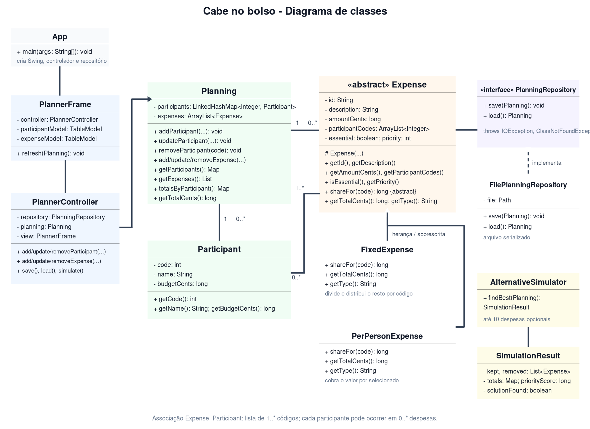

Relatório técnico da atividade final de Programação Orientada a Objetos
Cenário. Um grupo organiza um passeio. Algumas despesas, como transporte, são valores totais rateados entre quem participa; outras, como almoço, são cobradas por pessoa. Cada integrante tem um orçamento, e o grupo precisa saber o custo de cada um e se ele ultrapassa seu limite. A aplicação representa um planejamento por vez e persiste os dados em planejamento.dat.
O problema técnico central é manter participantes, despesas, vínculos e totais coerentes após cadastro, edição, exclusão e recuperação do arquivo. O código está organizado em pacotes sob src; as instruções de compilação e teste estão no README do repositório.
| Funcionalidade | Implementação no projeto | Por que foi feita assim |
|---|---|---|
| Participantes | Planning.addParticipant, updateParticipant, removeParticipant; campos e tabela na aba Participantes de PlannerFrame. | O modelo aplica as regras uma vez, independentemente da origem da ação; a tela serve para editar e consultar. |
| Despesas | Planning.addExpense, updateExpense, removeExpense; formulário e tabela na aba Despesas. | Uma identificação UUID separa a identidade da despesa da descrição editável e permite localizar com segurança o registro. |
| Rateio | Expense.shareFor é sobrescrito em FixedExpense e PerPersonExpense; custos em centavos. | O modelo escolhe o cálculo por polimorfismo; a interface não duplica regras monetárias. |
| Resumo | Planning.totalsByParticipant, getTotalCents e apresentação em PlannerFrame.updateSummary. | Totais derivados do estado atual evitam manter valores em cache que poderiam ficar desatualizados. |
| Persistência | PlanningRepository e FilePlanningRepository; botões Salvar/Carregar e recuperação inicial. | Um contrato desacopla o controlador do arquivo concreto e permite tratar recuperação sem perder o estado atual. |
| Regra | Como e onde é aplicada | Comportamento |
|---|---|---|
| Participante | Planning.validateParticipant e verificações em addParticipant/updateParticipant. | Código positivo e único, nome não vazio e orçamento >= 0; invalidez lança IllegalArgumentException. |
| Despesa e vínculo | Planning.createExpense antes de adicionar ou substituir. | Descrição não vazia, valor > 0, lista não vazia, códigos existentes e sem repetição; opcional requer prioridade positiva. |
| Exclusão de pessoa | Planning.removeParticipant percorre despesas vinculadas. | Bloqueia remoção enquanto houver vínculo, para não deixar despesa apontando a código inexistente. |
| Dinheiro | Money.parseCents faz conversão decimal precisa; modelos guardam long em centavos. | Rejeita campo vazio, formato inválido ou mais de duas casas decimais; evita erro binário de float/double. |
| Fixa / por pessoa | FixedExpense.shareFor usa quociente e resto; PerPersonExpense.shareFor aplica valor unitário. | Centavos restantes vão aos códigos selecionados em ordem crescente. Não selecionados pagam zero. |
| Orçamento | Totais do modelo são comparados aos orçamentos em PlannerFrame.refresh e updateSummary. | Total igual ao limite aparece como dentro; acima, mostra excedente. O planejamento continua registrável. |
| Falhas e estado | Visão apresenta exceções de validação; repositório declara falhas de E/S; controlador só atribui planejamento após carga bem-sucedida. | Mensagem explícita e preservação do estado anterior em operações inválidas ou falha ao carregar. |
Os campos são interpretados na visão antes de chegar ao modelo. O controlador encaminha valores já tipados; o modelo valida e modifica o estado somente depois que a entrada é considerada válida. A tabela abaixo acompanha um cadastro e a inclusão de uma despesa fixa, desde o formulário até os objetos armazenados e os valores calculados.
| Etapa e entrada | Método executado e transformação | Objeto instanciado ou modificado | Resultado |
|---|---|---|---|
1. Cadastro: código "1", nome "Ana", orçamento "70,00". |
PlannerFrame executa Integer.parseInt para o código e Money.parseCents("70,00") para converter o texto monetário em 7000L. Em seguida chama PlannerController.addParticipant(1, "Ana", 7000). |
O controlador encaminha para Planning.addParticipant. O método chama validateParticipant; após validação, cria new Participant(1, "Ana", 7000) e insere no mapa participants com a chave 1. |
O modelo passa a conter Ana com orçamento de 7000 centavos. O controlador pede atualização da visão; PlannerFrame.refresh apresenta o orçamento formatado como R$ 70,00. |
2. Despesa fixa: descrição "Transporte", valor "90,00", tipo Fixa, participantes selecionados [1, 2, 3], essencial marcado. |
A visão converte o valor para 9000L, obtém a lista de códigos dos itens selecionados e envia perPerson=false. Chama PlannerController.addExpense(...). |
Planning.addExpense gera um UUID e chama createExpense. Este valida descrição, valor, códigos existentes, ausência de duplicatas e classificação. Como perPerson é falso, instancia new FixedExpense(...), subclasse de Expense, e adiciona-a à lista expenses. |
O planejamento mantém a despesa e os códigos vinculados. Quando a visão atualiza o resumo, Planning.totalsByParticipant percorre despesas como Expense e despacha shareFor para a implementação concreta. FixedExpense divide 9000 centavos: 3000 para cada código. |
| 3. Consulta e apresentação dos totais. | Planning.totalsByParticipant inicia os totais em zero e soma a contribuição de cada despesa para cada código selecionado. getTotalCents soma o total das despesas. |
Não cria nem modifica participantes ou despesas; produz mapas/valores de consulta não modificáveis. | O controlador atualiza a tela. PlannerFrame formata centavos com Money.format, mostra situação orçamentária e detalhamento por despesa. |
Na edição de participante, a tela envia o código selecionado e os novos dados. Planning.updateParticipant valida os campos e cria outro Participant para substituir o anterior; as despesas não precisam ser regravadas porque guardam o mesmo código. Na edição de despesa, createExpense primeiro constrói uma nova especialização válida e só então a posição da lista é substituída. Assim, erro de entrada não deixa o modelo parcialmente atualizado.
Para salvar, PlannerController.save entrega o Planning ao PlanningRepository; FilePlanningRepository.save serializa o objeto em arquivo temporário e substitui o destino. Para carregar, o repositório devolve um novo Planning; o controlador troca sua referência somente após a leitura completar com sucesso, e então atualiza a visão.
A UML a seguir apresenta visibilidade (+ pública, - privada e # protegida), atributos, operações e multiplicidades. Planning mantém participantes em mapa por código e despesas em lista. A relação com participantes nas despesas é representada por códigos, não por referências diretas aos objetos; isso reduz dependência e preserva os vínculos na serialização. A regra do modelo assegura pelo menos um código por despesa.

Planning agrega o estado mutável e centraliza cadastro, consulta, atualização e exclusão. Participant encapsula código, nome e orçamento; seus campos são privados e imutáveis, portanto uma edição substitui o objeto depois da validação. Expense concentra os dados comuns e declara métodos abstratos de rateio, total e tipo. As subclasses implementam regras distintas e a lista do planejamento é tipada como Expense, demonstrando polimorfismo.
A multiplicidade Planning–Participant é 1 para 0..*: um planejamento contém zero ou mais participantes. Planning–Expense segue 1 para 0..*: o planejamento pode estar vazio ou conter várias despesas. Cada despesa referencia 1..* códigos; cada participante pode estar em 0..* despesas. A associação muitos-para-muitos é guardada do lado de Expense como uma lista sem duplicatas.
Expense guarda os códigos inteiros dos participantes, em vez de manter referências aos objetos Participant. O código é uma identidade estável: quando o orçamento ou o nome muda, Planning substitui o objeto do participante no mapa, e as despesas continuam vinculadas sem carregar cópias antigas nem duplicar dados. Na consulta, o planejamento resolve os códigos para os participantes atuais. A validação exige que todos existam e impede remover alguém ainda vinculado a uma despesa.
PlanningRepository define save e load; FilePlanningRepository implementa o contrato. PlannerController recebe a interface, portanto o controlador não depende de um caminho ou formato de arquivo específico. As classes AlternativeSimulator e SimulationResult implementam a extensão opcional, sem modificar o planejamento original.
| Pacote / classe | Responsabilidade e motivo da separação |
|---|---|
App | Cria o repositório, controlador e janela na thread Swing com SwingUtilities.invokeLater. |
view | PlannerFrame organiza abas Swing de participantes, despesas, resumo e simulador; Money converte e apresenta valores. |
controller | PlannerController encaminha eventos da visão ao modelo, pede atualização visual e coordena salvamento/carregamento. |
model | Entidades, regras de validação, cálculo e simulador; não depende dos componentes Swing. |
persistence | Contrato de repositório e implementação de arquivo, isolando detalhes de E/S. |
tests | Testes executáveis das regras do modelo, cálculos, integração do controlador e persistência. |
Exemplo do fluxo MVC: ao adicionar uma despesa, PlannerFrame interpreta o valor com Money e envia campos ao controlador. O controlador chama Planning.addExpense; o modelo valida e instancia a especialização adequada. Se válido, o controlador atualiza a visão; se inválido, a janela mostra a mensagem e o modelo permanece intacto.
LinkedHashMap<Integer, Participant> viabiliza busca pelo código único e mantém a ordem de cadastro; ArrayList<Expense> preserva a ordem das despesas e permite iteração para totais. Expense guarda os vínculos como uma lista sem duplicatas de códigos de participante, não como referências a objetos: o mapa de Planning continua sendo a fonte única dos dados atuais da pessoa, mesmo quando uma edição substitui seu objeto. Listas e mapas genéricos dão segurança de tipos; consultas retornam cópias ou visões não modificáveis, evitando edição do estado interno fora de Planning.
As classes serializadas implementam Serializable e declaram serialVersionUID. Os fluxos são fechados com try-with-resources. O salvamento escreve arquivo temporário e tenta substituição atômica; a leitura verifica se o objeto recuperado é um Planning. O controlador só troca a referência depois que load retorna corretamente. Em inicialização, arquivo ausente inicia planejamento vazio; outro erro é comunicado pela janela.
A UML registra abstrações e associações que guiaram a estrutura dos pacotes. Os cálculos são testados diretamente contra o modelo em PlanningTest, sem inicializar uma janela Swing. Por exemplo, referenceCase verifica totais em centavos e centDistribution testa o resto do rateio. Isso permite encontrar erros de regra sem depender de entrada manual. Depois, o controlador e a persistência também são testados; a suíte não automatiza interação visual, limitação registrada na seção 5.
O código e o diagrama atualizado estão no repositório. Para execução e testes, as instruções são: compilar com o JDK 21 ou superior, iniciar App e executar tests.PlanningTest com assertions habilitadas. O README contém os comandos reproduzíveis.
| Participante | Código | Orçamento |
|---|---|---|
| Ana | 1 | R$ 70,00 |
| Bruno | 2 | R$ 60,00 |
| Carla | 3 | R$ 70,00 |
| Despesa | Tipo | Valor informado | Participantes |
|---|---|---|---|
| Transporte | Fixa | R$ 90,00 | Ana, Bruno e Carla |
| Almoço | Por pessoa | R$ 20,00 | Ana, Bruno e Carla |
| Atividade recreativa | Fixa | R$ 30,00 | Ana e Carla |
| Sobremesa | Por pessoa | R$ 10,00 | Ana, Bruno e Carla |
| Pessoa | Transporte | Almoço | Atividade | Sobremesa | Total esperado e obtido | Orçamento / situação |
|---|---|---|---|---|---|---|
| Ana | R$ 30,00 | R$ 20,00 | R$ 15,00 | R$ 10,00 | R$ 75,00 | R$ 70,00; excede R$ 5,00 |
| Bruno | R$ 30,00 | R$ 20,00 | R$ 0,00 | R$ 10,00 | R$ 60,00 | R$ 60,00; no limite |
| Carla | R$ 30,00 | R$ 20,00 | R$ 15,00 | R$ 10,00 | R$ 75,00 | R$ 70,00; excede R$ 5,00 |
Conferência aritmética: o transporte resulta em R$ 30,00 para cada pessoa (R$ 90,00 ÷ 3); o almoço e a sobremesa cobram R$ 20,00 e R$ 10,00 de cada selecionado; a atividade resulta em R$ 15,00 para Ana e Carla (R$ 30,00 ÷ 2). Portanto, os valores esperados do enunciado estão corretos. A soma individual é Ana R$ 75,00, Bruno R$ 60,00 e Carla R$ 75,00, totalizando R$ 210,00. A diferença entre orçamento e custo é calculada individualmente; exceder não impede salvar o planejamento.
| Entrada / operação | Resultado esperado | Resultado obtido | Evidência no teste |
|---|---|---|---|
| Caso principal: modelo de referência | Total 210,00; Ana 75,00, Bruno 60,00, Carla 75,00 | Conforme | referenceCase: igualdades em centavos. |
| Despesa fixa de 100,00, códigos 3, 1, 2 | Cód. 1 = 33,34; cód. 2 e 3 = 33,33 | Conforme | centDistribution. |
| Valor em branco, despesa sem descrição, valor negativo e falta de participantes | Recusar entradas e manter estado | Conforme | validationDoesNotChangeState e validação de Money.parseCents. |
| Código de participante duplicado e nome vazio | Recusar cadastro e preservar os três participantes | Conforme | validationDoesNotChangeState. |
| Orçamento no caso principal | Ana e Carla excedem R$ 5,00; Bruno fica no limite | Conforme | referenceCase compara totais e orçamentos. |
| Alterar orçamento de Ana para 80,00 | Custo fica 75,00; agora dentro do limite | Conforme para custo; orçamento foi atualizado | expenseDeletionAndBudgetUpdate. |
| Excluir atividade recreativa do caso original | 60,00 para cada um; total 180,00 | Conforme | expenseDeletionAndBudgetUpdate. |
| Salvar e recriar controlador/repositório | Três participantes, quatro despesas, vínculos e totais recuperados do arquivo | Conforme | persistenceRoundTrip simula a reinicialização com novas instâncias. |
| Carregar texto como arquivo inválido | Falha e planejamento em uso preservado | Conforme | failedLoadPreservesPlanning. |
| Simulador: prioridades 3 e 1 | Manter atividade; retirar sobremesa; totais 65, 50, 65 | Conforme | simulatorCases. |
| Simulador: orçamento Ana = 40,00 | Sem solução; despesas essenciais de Ana = 50,00 | Conforme | simulatorCases. |
A suíte foi executada e apresentou Todos os testes passaram. As evidências são asserts executáveis nos métodos da classe de teste; a interação automatizada de cliques e componentes Swing não faz parte da suíte, portanto não se afirma cobertura visual automatizada.
Reprodução no repositório (raiz do projeto, JDK 21 ou superior):
mkdir -p bin
javac -encoding UTF-8 -d bin $(find src -name '*.java')
java -ea -cp bin tests.PlanningTest
java -cp bin AppA principal escolha de orientação a objetos foi manter as regras no modelo: encapsulamento impede que telas editem listas e mapas diretamente; herança e polimorfismo permitem dois rateios sem condicionais duplicadas; a interface de repositório separa o uso do planejamento do formato do arquivo. O teste independente de Swing foi útil para detectar erros aritméticos e preservar o comportamento esperado antes de depender da interação gráfica.
As dificuldades técnicas mais relevantes foram representar dinheiro sem imprecisão, distribuir restos de centavos de forma determinística e impedir corrupção lógica em edições e carregamentos. Centavos inteiros e ordenação por código resolvem o primeiro caso; validação antes da substituição e atribuição do planejamento só depois de leitura completa tratam os outros. O teste da exclusão confirma que os valores são recalculados a partir da lista atual, em vez de manter um total acumulado desatualizado.
A interface informa excedentes e validações, mas poderia ser aprimorada com testes automatizados de interação, confirmação de exclusões e exportação do resumo. A suíte cobre modelo, controlador e persistência; não cobre eventos gráficos. Para uso real, também seria pertinente validar o arquivo serializado de fontes não confiáveis e oferecer recuperação ou backup configurável.
| Integrante | Implementação | Integração | Validação | Documentação |
|---|---|---|---|---|
| [Nome 1] | [atividade] | [atividade] | [atividade] | [atividade] |
| [Nome 2] | [atividade] | [atividade] | [atividade] | [atividade] |
| [Nome 3] | [atividade] | [atividade] | [atividade] | [atividade] |
| [Nome 4] | [atividade] | [atividade] | [atividade] | [atividade] |
DEITEL, Paul; DEITEL, Harvey. Java: como programar. 10. ed. São Paulo: Pearson Education do Brasil, 2017.
ORACLE. The Java Tutorials: Collections. Disponível em: https://docs.oracle.com/javase/tutorial/collections/. Acesso em: 23 nov. 2026.
ORACLE. The Java Tutorials: Creating a GUI With Swing. Disponível em: https://docs.oracle.com/javase/tutorial/uiswing/. Acesso em: 23 nov. 2026.
ASCX002. Planejador de despesas compartilhadas. Repositório do projeto. Disponível em: https://github.com/ASCX002/planejador-de-despesas. Acesso em: 23 nov. 2026.
Esta página detalha como o usuário percorre as telas e como cada ação altera o planejamento. A janela PlannerFrame é organizada em quatro abas para que cadastro, consulta e simulação não disputem o mesmo formulário. A barra superior contém ações que se aplicam ao planejamento inteiro: carregar o caso de referência, salvar e carregar o arquivo local.
| Tela/ação | Entrada e seleção | Regra executada | O que o usuário vê após sucesso |
|---|---|---|---|
| Participantes — Adicionar | Código, nome, orçamento em reais | Conversão de orçamento para centavos e validação de código, nome e limite | Nova linha com orçamento, custo atual e situação |
| Participantes — Atualizar | Seleciona uma linha, edita nome/orçamento | O código existente identifica a pessoa; orçamento e nome são revalidados | Linha e situação orçamentária atualizadas |
| Participantes — Excluir | Seleciona uma linha da tabela | Bloqueia se o código constar em qualquer despesa | Participante removido ou mensagem de vínculo |
| Despesas — Adicionar | Descrição, valor, tipo, lista múltipla e essencial/prioridade | Valida valor, descrição, participantes e regras de prioridade | Nova linha de despesa e resumo recalculado |
| Despesas — Editar/Excluir | Seleciona uma despesa na tabela | Carrega campos pelo UUID e valida antes de substituir; exclusão usa o UUID | Campos da seleção preenchidos; depois da operação, tabela e resumo atualizados |
| Resumo | Somente consulta | Recalcula custos e compara com orçamentos atuais | Despesas, total geral, parcelas por pessoa e saldo/excedente |
| Simulador | Usa classificações e prioridades existentes | Busca combinações que cabem nos orçamentos | Lista de despesas mantidas/retiradas e novos totais, sem alterar a origem |
As tabelas de participantes e despesas usam DefaultTableModel configurado como somente leitura. Isso é intencional: uma célula editável poderia alterar o texto apresentado sem invocar validação nem atualizar o modelo. A edição é feita nos formulários e confirmada pelo controlador. Ao selecionar uma despesa, a aplicação recupera o objeto pelo identificador UUID, restaura os códigos dos participantes selecionados e preenche tipo, essencialidade e prioridade. Ao selecionar uma pessoa, o código fica não editável para preservar sua identidade durante a atualização.
Os seletores múltiplos seguem a regra de participação seletiva. O método selectedCodes() converte os itens selecionados em inteiros e envia a lista ao controlador. A lista exibida combina código e nome para ajudar a identificar os participantes; o modelo persiste somente os códigos. Assim, alterar o nome não quebra os vínculos e a tabela de resumo sempre consulta o nome atual.
Operações de botão são executadas por runAction. Exceções de validação, falhas de E/S e falhas de classe são convertidas em caixas de diálogo com a mensagem disponível. A ação de carregar o caso de referência exige confirmação quando substitui o estado atual, pois esse comando troca todo o objeto Planning, em vez de mesclar dados.
O cálculo é feito em centavos inteiros e tem como unidade base a contribuição de uma pessoa em uma despesa. O método abstrato Expense.shareFor(code) é chamado pelo modelo sem distinguir a implementação concreta. A regra de total da despesa também difere: a despesa fixa tem como total o valor informado; a despesa por pessoa tem como total o valor unitário multiplicado pela quantidade de participantes.
| Despesa | Tipo/classe instanciada | Operação | Participantes | Total contabilizado |
|---|---|---|---|---|
| Transporte — R$ 90,00 | Fixa / FixedExpense | 9000 ÷ 3 = 3000 centavos | Ana 30,00; Bruno 30,00; Carla 30,00 | R$ 90,00 |
| Almoço — R$ 20,00 | Por pessoa / PerPersonExpense | 2000 centavos por selecionado | Ana 20,00; Bruno 20,00; Carla 20,00 | R$ 60,00 |
| Atividade recreativa — R$ 30,00 | Fixa / FixedExpense | 3000 ÷ 2 = 1500 centavos | Ana 15,00; Carla 15,00; Bruno 0,00 | R$ 30,00 |
| Sobremesa — R$ 10,00 | Por pessoa / PerPersonExpense | 1000 centavos por selecionado | Ana 10,00; Bruno 10,00; Carla 10,00 | R$ 30,00 |
A soma da coluna de totais é R$ 210,00. A soma das contribuições individuais também é R$ 210,00: Ana = 3000 + 2000 + 1500 + 1000 = 7500 centavos; Bruno = 3000 + 2000 + 0 + 1000 = 6000; Carla = 3000 + 2000 + 1500 + 1000 = 7500. A igualdade entre as duas somas é um invariante útil: em despesas fixas, as parcelas devem recompor o valor informado; em despesas por pessoa, o total da despesa corresponde ao valor unitário vezes os participantes selecionados.
Para R$ 100,00 dividido por três, o código usa divisão inteira: 10000 / 3 produz base 3333 centavos e resto 1. FixedExpense.shareFor ordena os códigos; o primeiro recebe mais um centavo. A entrada da lista pode ser [3, 1, 2], mas os valores permanecem determinísticos: código 1 = 3334 e códigos 2 e 3 = 3333. O teste verifica os valores e, assim, protege a regra contra mudanças na ordem de cadastro ou seleção.
Planning.totalsByParticipant inicia todos os participantes com zero, percorre as despesas e adiciona a parcela calculada para cada código vinculado. Isso faz com que pessoas sem participação em determinada despesa não recebam contribuição e permaneçam no mapa de totais. Math.addExact detecta overflow em somas; a tela não mascara essa condição com um valor aproximado.
O arquivo local representa um retrato serializado de Planning, não um arquivo de texto que o usuário edita campo por campo. A escolha mantém participantes, subclasses concretas de Expense, listas de códigos e prioridades no mesmo objeto raiz. O contrato PlanningRepository é a fronteira: o controlador chama save ou load e não manipula fluxos de bytes.
PlannerController.save() encaminha o objeto de planejamento atual ao repositório.FilePlanningRepository.save transforma o destino em caminho absoluto e cria a pasta pai se necessário.ObjectOutputStream.try-with-resources antes de mover o arquivo. Primeiro tenta ATOMIC_MOVE; se não for suportado, tenta substituição normal.finally remove o temporário remanescente. Isso evita deixar lixo de uma operação incompleta.O arquivo temporário é criado no diretório de destino para aumentar a possibilidade de a movimentação atômica ocorrer dentro do mesmo sistema de arquivos. A gravação completa precede a troca do destino: se a serialização falhar, o arquivo antigo não é substituído. A movimentação não promete proteção contra falha física do dispositivo ou corrupção externa, mas reduz a janela de arquivo parcialmente escrito.
| Condição | Comportamento do repositório/controlador | Efeito no planejamento |
|---|---|---|
| Arquivo ausente no início | loadAtStartup trata NoSuchFileException | Primeira execução continua com planejamento vazio, sem substituir por dados fictícios |
| Arquivo válido | load() lê objeto, verifica instanceof Planning e retorna | Controlador substitui a referência e atualiza as tabelas e resumo |
| Bytes inválidos/classe ausente | Exceção de I/O ou ClassNotFoundException sobe até a interface | Mensagem explícita; planejamento anteriormente em uso é preservado |
| Objeto não é Planning | Repositório lança IOException | Não aceita conteúdo de tipo incompatível; estado atual permanece |
| Falha ao salvar | IOException é apresentada pela ação do botão | Não mostra confirmação de sucesso; usuário é informado da falha |
Na leitura, o repositório primeiro constrói uma variável local loaded; somente depois da conclusão, PlannerController.load executa planning = loaded. A ordem importa: não se zera o modelo antes de saber se existe um arquivo válido. Os testes cobrem o ciclo válido com arquivo temporário e também um arquivo textual inválido, conferindo que o estado de referência em uso continua com total de R$ 210,00.
As classes de dados relevantes implementam Serializable e declaram serialVersionUID. Os identificadores de versão são explícitos para que a compatibilidade serial não dependa de um valor calculado automaticamente a partir da estrutura compilada. Mudanças futuras na forma dos dados ainda exigem planejamento de migração, que não faz parte deste escopo.
O simulador opcional trata a seleção de despesas como um problema de busca exata. Ele separa as essenciais das opcionais e, para n opcionais, percorre as 2^n máscaras de bits possíveis. Um bit ligado significa manter aquela despesa; desligado significa retirá-la. O limite de dez opcionais limita a busca a no máximo 1024 candidatos, um tamanho pequeno e previsível para a interface.
No caso de referência, transporte e almoço são essenciais. Atividade recreativa tem prioridade 3; sobremesa tem prioridade 1. Os totais essenciais são R$ 50,00 por participante. A Tabela D1 mostra todos os quatro subconjuntos possíveis, na ordem dos opcionais apresentada pelo planejamento.
| Máscara (atividade, sobremesa) | Opcionais mantidas | Prioridade | Ana / Bruno / Carla | Orçamentos respeitados? |
|---|---|---|---|---|
| 00 | Nenhuma | 0 | R$ 50 / R$ 50 / R$ 50 | Sim |
| 10 | Atividade recreativa | 3 | R$ 65 / R$ 50 / R$ 65 | Sim — melhor prioridade |
| 01 | Sobremesa | 1 | R$ 60 / R$ 60 / R$ 60 | Sim |
| 11 | Atividade e sobremesa | 4 | R$ 75 / R$ 60 / R$ 75 | Não — Ana e Carla excedem |
AlternativeSimulator.findBest não considera somente a soma das prioridades: primeiro valida o orçamento de cada participante. Entre os candidatos válidos, guarda o de maior pontuação. Nesse caso, máscara 10 vence porque tem prioridade 3 e respeita os três limites. O resultado informa manter atividade e retirar sobremesa. As despesas essenciais nunca são removidas.
Antes de enumerar opcionais, o algoritmo verifica as essenciais. Se alguma pessoa já ultrapassa o próprio orçamento apenas com elas, retorna solutionFound=false, lista as essenciais mantidas para diagnóstico e não afirma que há combinação viável. Com Ana limitada a R$ 40,00, o custo essencial dela é R$ 50,00; portanto falta solução independentemente de quais opcionais sejam escolhidas.
Para cada máscara, os totais são construídos em estruturas locais; a rotina não remove despesas de Planning. A lista kept, a lista removed, os novos totais, a pontuação e o indicador de solução são reunidos em SimulationResult. A tela exibe separadamente mantidas e retiradas e, em caso inviável, calcula e mostra o excesso essencial.
A enumeração custa aproximadamente O(2^n × p × e), sendo p o número de participantes e e o número de despesas incluídas na soma. O limite de dez opcionais torna essa solução simples de verificar e garante encontrar a prioridade ótima, ao contrário de uma estratégia gulosa que poderia escolher uma despesa de prioridade alta e bloquear uma combinação melhor. O teste valida tanto a solução prioritária quanto a ausência de solução quando as essenciais já excedem o orçamento.